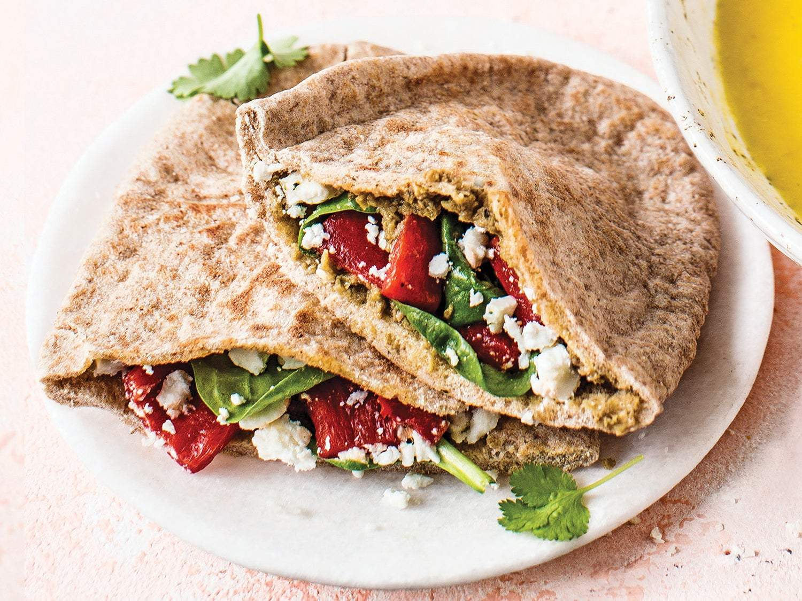

Forku Kebab

Homemade kebab with veggi chicken, tofu and vegetables in soy sauce
Ingredients
- pita bread
- veggie chicken
- tofu
- zucchini
- pepper
- arugula
- shepherd's cheese
- cayenne pepper
- soy sauce
- rosemary(spice)
- parsley(fresh or spice)
Steps
- At first you wash and cut the vegetables, then cook them in a pan
- fry the veggie chicken in a pan, add spices to your liking
- heat up the oven, put the pita bread in it when ready
- wash the arugula and put it in a bowl
- cut the shepherd's cheese and also put it in a bowl
- when the vegetables are cooked add soy sauce, cayenne pepper, rosemary and parsley
- when ready put the pita breda out of the oven
- everything's ready now so you can start filling the pita bread with vegetables, chicken, arugula and cheese
- that's it, bon appétit.
Home